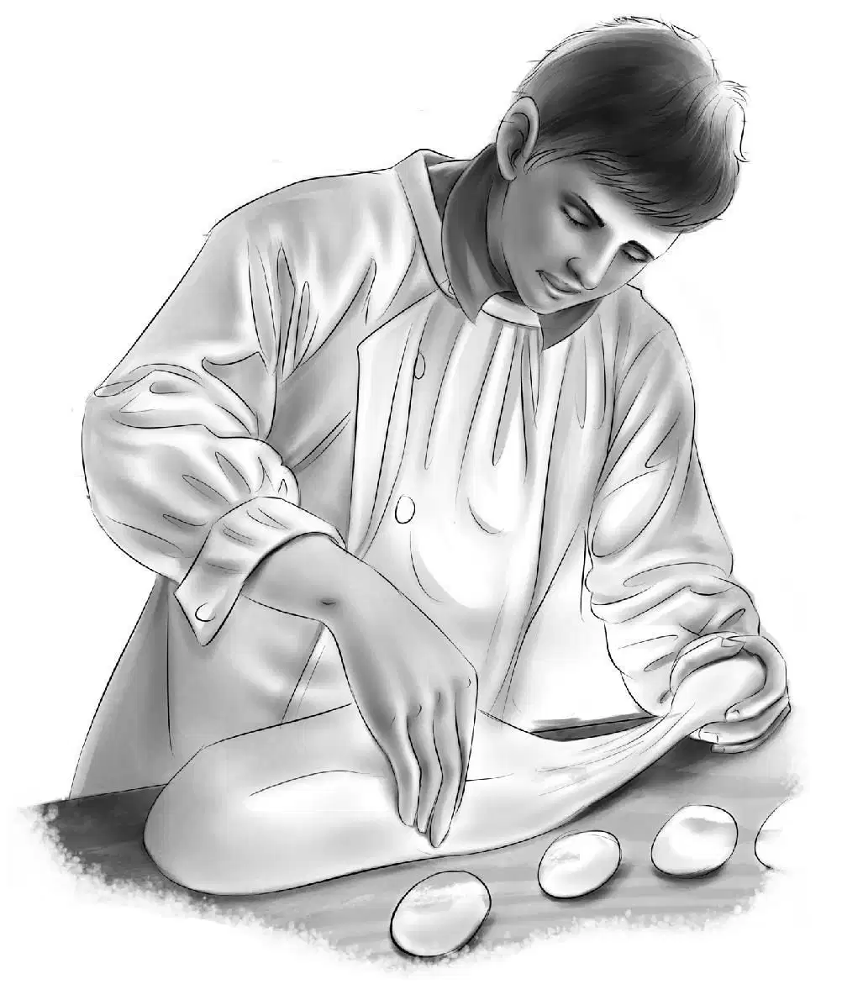
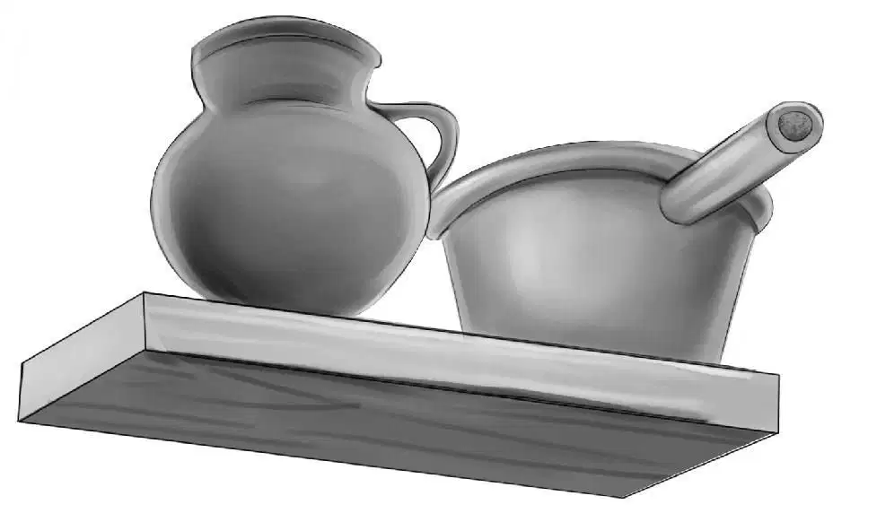
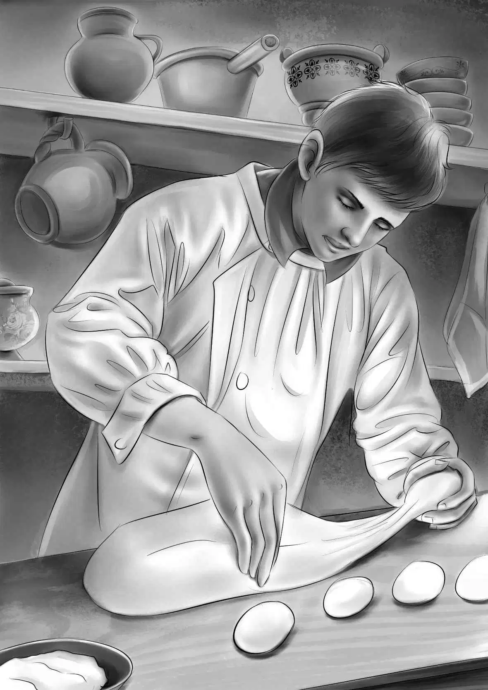

A Surprise in Store

三名交通部门的工作人员和一名州警来到小木屋前，他们已经铲出了一条通往山下的小路。
“很高兴见到你们！”亨利叫道。
那几人挥了挥手，尽管他们知道，这里有七个人、一只小狗，以及很多很多行李，可大伙儿做梦也没想到，这里还有一箱松鼠。
“啊哈！”一名红脸铲雪工叫道，“干吗要把这五只松鼠带回家去？我家后院多的是，你们想要多少有多少。”
杰西解释道：“它们原本在小木屋的棚顶做了窝，还存了好多松果——瞧，就是从那个洞钻进去的。如果现在把松鼠放走，它们一定会饿死的。”
“饿死？松鼠会饿死？”铲雪工迈克连连惊呼，“它们可饿不死呢！你们只管把核桃留在台阶上，然后放它们走，接下来就瞧好了，你不是说房顶有个洞么？等不到天黑，它们就能把所有的核桃都搬进去。”
几名工作人员全都点了点头，大笑起来。
“可是房顶的雪很厚呢！”尽管亨利嘴上这样说，但他还是把那袋核桃放到了台阶上，并移开了盖住松鼠箱的木板。没多久，一只松鼠便探头探脑地爬了出来，不住地打量着那袋核桃，接着，它的小伙伴们也一只接一只地跑出箱子，一动不动地蹲在台阶上。
“看来迈克说得不错，这些松鼠不会有事的。”州警说道，“你们早该把它们放出来了。”
托马斯·尼尔森哈哈笑了起来：“不错，有道理！”
迈克说道：“看到那棵树上的大洞了吗？那是个做窝的好地方，松鼠们会自己找过去安家的。”
此时，奥登兄妹和尼尔森一家人已经收拾妥当，做好了离开的准备。
“奥登先生见到你们会很高兴的。”州警说，“他正在车里等着呢，说是在家里实在待不住。”
就这样，一行人出发了。两名铲雪工走在前面，紧接着是奥登家的孩子和望望，再是另外一名铲雪工和尼尔森一家，走在最后的是州警。
铲出来的小道又长又滑，积雪高高堆在两旁，给人一种走在隧道里的感觉，就连个儿最高的托马斯也看不到雪堆外的风景。众人走了很久，可似乎怎么也走不到尽头。
终于，班尼他们看到了旅行车，只见爷爷正坐在驾驶座上，朝窗外挥着手。
多么幸福的欢聚时刻！这份喜悦，州警只感受了一小会儿，便骑着摩托急急奔向下一个救助点，之后几名铲雪工也冲奥登一家挥手告别了。
“我再也不能让你们离开我的视线了。”奥登先生说道，“可是我又不能这么自私。”
“您才不自私呢。”维莉说，“现在我只想坐在您身边。”
“没问题！”爷爷说，“车里还能再坐七个人——完全装得下八个人和一只小狗。尼尔森先生，尼尔森太太，非常感谢你们赶来帮助孩子们。我想邀请你们到家里来，住到雪化了再回去。”
“爷爷，我们这次真的去探险啦，好刺激！”班尼说，“之前还真被杰西说中了。”
“哈，如愿以偿了吧？”
“可不是么。”班尼继续说道，“亨利还说，这次的谜团让人摸不着头脑，不过最后还是被我们解开了。”
“等回家后再细细告诉我吧！”说着，奥登先生发动了汽车。
“只是咱们没把那箱松鼠带回来。”帕奇说。
“噢？是么？”爷爷睁大眼睛，“幸好没有。”
“帕奇，待会儿再讲松鼠的故事吧。”班尼说，“回家的感觉实在太好啦！我要先洗个澡，换上干净的衣服。”
“哎哟，小班班！”亨利说道，“这话还真不像你说的，你可不太喜欢洗澡哦！”
“我也不喜欢。”帕奇诉起苦来，“可妈妈还是要逼着我洗。”
旅行车驶进了家里的车道，麦格雷戈夫妇打开了门——他们一直是奥登先生的得力管家。
“见到你们实在太高兴啦！”麦格雷戈太太说，“望望，跟我来，看我给你准备了什么！”
亨利则迫不及待地对爷爷说：“尼尔森家发生了一件重大事情，我们必须马上告诉您。”
“那就先别忙着收拾东西啦，”奥登先生说，“都坐下来，快跟我讲讲，你们究竟遇到了什么谜团。”
就这样，由班尼主讲，其他人补充，奥登先生将找到面包配方的离奇过程听了个大概，同时心里也清楚了这个配方的价值。接着，他又转向托马斯·尼尔森，听故事主角本人进行亲口讲述。

托马斯缓缓地说：“真是幸运得让人难以置信啊！这么多年以来，我一直梦想着像爷爷一样，做出美味无比的小面包，现在总算可以如愿以偿了。”
“你可以在我家厨房小试一下身手！”奥登先生笑着说。
“这主意不错，正好可以做点小面包当晚餐。”托马斯说，“还有很多时间，足够发面了。”
班尼飞快地点着头：“爷爷，托马斯的手艺可好啦，可惜他的商店在村里，生意不好，要是有足够的钱，他就可以在镇里开店了。”
“或许我能帮上忙。”奥登先生答道，“不过，我得先尝尝你做的小面包才行。”爷爷的眼睛闪闪发亮。
“厨房在哪里，奥登先生？”帕奇问道。
“班尼，你带尼尔森先生去厨房吧。”爷爷说，“帕奇要是愿意的话，也可以一起去。”
托马斯兴奋极了，他们迫不及待地去了厨房。班尼跟麦格雷戈太太解释了一番，说托马斯要做些小面包。
“好啊！”和蔼的麦格雷戈太太说道，“您请便，尼尔森先生。面粉在这里，砂糖在这里，鸡蛋……”
“在冰箱里。”尼尔森笑了笑，替她说完了下面的话，“很多布局奇怪的厨房我都见怪不怪了。想要什么，随手都拿得到。喏，我连碗都找到了。”说着，他取下一只黄色的和面碗。
“这里找得到那种神秘的配料么？就是那个问号代表的配料？”班尼问道，“我们家有么？”
“有啊，我已经找到了。”托马斯冲班尼眨了眨眼，“其实这配料很常见，每家每户都有。不过，这个秘密我可不能说出来。”
班尼、帕奇和麦格雷戈太太一齐在旁边观看着，只见托马斯已经和好了面，正等着发酵。他把碗放到温度较高的地方，盖上一块布后，和两个孩子回到了众人身边。
“我一直盯着托马斯，”班尼说，“可是没见他放什么特别的东西进去。”
“我放了，只是你没注意罢了。”托马斯说，“我会把做出来的面包叫作‘班尼小面包’。”
发酵的面团已经涨出了碗口，托马斯反复揉了揉，分成几个面团，码在一起，等着再次发酵。
“我做的是甜味小面包。”托马斯说，“和甜点搭配着吃味道更好。”
“今天的甜点是冰激凌。”麦格雷戈太太微笑着说，“有四种口味，都在冰箱里放着呢。”
甜点端上来时，大家都兴奋不已，托马斯做的小面包非常松软，轻柔得像羽毛，每个面包上还点缀着葡萄干。爷爷拿起来咬了一口，众人全都目不转睛地盯着他。
“太好吃了，尼尔森先生！”他说，“我还从来没吃过这么美味的小面包呢！而且我真的尝不出，到底是什么配料让它的味道如此特别。”
“喜欢就好。”托马斯开心极了。看到丈夫终于如愿以偿地做了自己最热爱的事情，芭芭拉也很快活。

第二天一早，奥登先生对托马斯说：“我想领你去街上转转，见几个人。你知道的，镇上有不少外地过来采购的生意人。”
班尼望了望亨利，笑了起来，他们知道，爷爷一定有什么好主意了。
临行前，爷爷问麦格雷戈太太是否需要带些东西回来。
“要的，奥登先生，要给班尼买些汉堡和热狗，我想用电炒锅焙些青豆，配着热狗吃。”
“哦，天哪。”帕奇叫了起来，“我也喜欢这样的吃法呢，要是我也可以一起去就好了。”
“当然可以。”爷爷看着尼尔森太太说，“如果你妈妈同意的话。其实，咱们可以一起去的。”
就这样，大伙儿向镇上出发了。亨利则留在了家里，因为他得为回校做准备，望望也留了下来，以便为车子留出足够的空间。
爷爷开着车，一路上经过了几家超市、一所学校，还有不少商店。接着，他转了个弯，沿着另一条路掉头往回开。
“我知道啦！”班尼说道，“您是想去弗兰克商店买热狗！”
“猜得不错。”奥登先生说，“弗兰克商店卖的鲜肉和日用品都是最好的。”
奥登先生把车子停在店门口，只见商店的招牌上写着：
罗杰·弗兰克商店
出售鲜肉及百货
奥登一家走进商店，弗兰克朝他们笑了笑，他正在接待其他顾客，因此只匆匆打了个招呼：“早上好，奥登先生。我一会就来。”
“不急。”爷爷说道，“我们先转转。”
班尼悄悄对杰西说道：“看爷爷的样子！他肯定有什么新点子了。”
“是啊。”维莉说，“他叫上尼尔森先生逛街的时候，我就注意到了。”
可是如果爷爷不准备告诉大家，谁都猜不到他在计划着什么。
最后，几名客人终于离开了，而经过帕奇身边时，他们全都绽开了笑颜——人们似乎很喜欢对着帕奇微笑。
“给我来点三明治和热狗好了，罗杰。”奥登先生说，“对了，有甜面包吗？”
“没有。”罗杰·弗兰克摇了摇头，“这里没有点心卖，我倒是很想进一点儿货，肯定会卖得很好的，或许以后……”话没说完，罗杰就打住了。
只见爷爷坐在一把高脚椅上，一圈又一圈地转着，那滑稽的样子惹得大家哈哈大笑。而所有人都在等着奥登先生开口，想听听他会说出怎样令人惊喜的话来。
终于，他开口了，严肃的脸上却没有一丝笑容：“旁边的那间铺子不是空着么？而且跟你的店只隔了一扇门。”奥登先生提醒道。
“不错。”弗兰克说，“我早就想征用隔壁的店铺了，可是一直买不起，我还真需要更大的店面。”
班尼忍不住叫道：“你要是租下那间店铺，就有地方卖面包啦！”
奥登先生的脸上仍然没有笑意，严肃得像个法官，他说：“看来，我的计划被我孙子猜出来了。”
“计划？”店主有些糊涂了。
“我来给你介绍一位面包师。”奥登先生说，“他用的是祖传配方，专门制作‘班尼小面包’。”
“看来这面包是用班尼的名字命名的。”罗杰·弗兰克点点头，有些明白了。
帕奇说道：“我爸爸不止会做小面包，他还会烙馅饼，做生日蛋糕，炸饼圈，还有烤曲奇饼呢。”
“这么能干啊！”弗兰克先生说着，仔细地打量着小男孩。
“嗯！他是世界上最出色的面包师。”帕奇说。
弗兰克先生看了看奥登先生：“如果能把世界上最好的面包师请来，对我的商店也有好处呢。”
“我就知道你的脑子转得快。”爷爷说，“你要是租下转角那间铺子，托马斯完全可以在你这儿干活。或许你还不知道吧，那间空铺子是我的。”
两名年轻人相互对望了一眼，心里都有种惺惺相惜的感觉。
托马斯说：“我觉得咱们可以试试。这是我妻子——芭芭拉，我村里的店铺都是她帮着打理的。还有帕奇，他很会卖东西呢。”
“这点我早看出来了。”罗杰·弗兰克笑了起来。
“我带你们去那间空铺子看看吧。”奥登先生说。
爷爷打开两间铺子之间的门锁，大伙儿走了进去，只见这铺面十分敞亮，四处都是大窗户，阳光洒满了整间屋子。
“这地方多适合做面包啊！”维莉说，“放学回家的时候，我们女生可以顺路来这儿买面包呢。”
“这个主意不错，乖孩子。”奥登先生说，“不过这里还需要打扫和粉刷。还得把这堵墙拆掉，并成一间大铺子。你要买面包，恐怕要等上一阵子咯。”
“肯定不会等太久的，爷爷。”班尼说，“因为有您在啊！”
“说得不错，小班班。”帕奇说道。